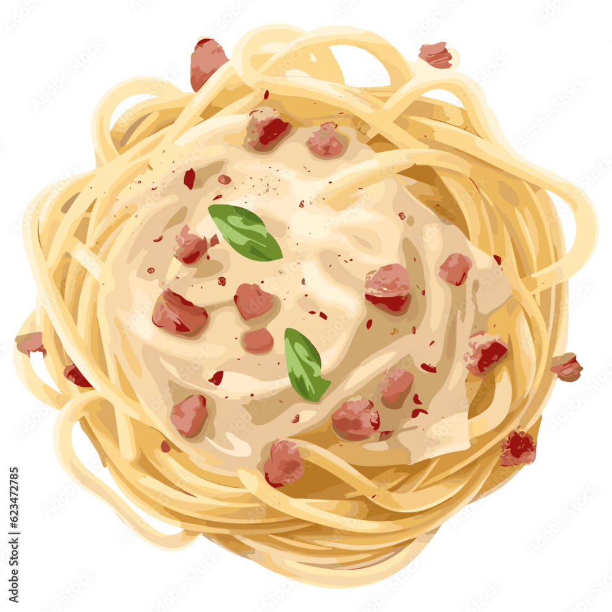

Carbonara
Home

Description
I love me a good pasta dish, and this one is easy, quick and delicious. From the grooved bucatini pasta, with the creamy pecorino and the savoury guanciale, you can't miss with this absolute classic
- 400g pasta
- 150g guanciale (Cut in chunks)
- 2 eggs (whisked)
- 30 g pecorino
- 1 tsp black pepper (Crushed)
- 1 clove of garlic (Sliced)
- 1 tbsp olive oil
Steps
- Get a large pot, and cook your pasta in a good amount of heavily salted water
- You heat a pan to medium heat, add olive oil, wait for the oil to heat up, then add your guanciale, and roast it to golden brown with the garlic slices
- While the pasta is boiling and the guanciale is seering, mix your sauce by adding the eggs, pecorino and black pepper together in a bowl
- Discard the garlic
- Add some pasta water to the guanciale and let it sit for a moment
- Add the saucemix
- Once your pasta is al dente, strain it, and save a couple of cups worth of pasta water, if you need to adjust the wetness of the sauce
- Put the pasta into the pan with the sauce, and mix it under low heat, while tasting and adjusting it
- Bone apple teeth